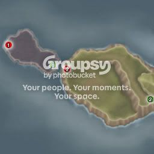

[Data] Map [Version 1.0][รออัพเดท]
 โดย ECO » จันทร์ 09 มี.ค. 2009 7:15 pm
โดย ECO » จันทร์ 09 มี.ค. 2009 7:15 pm


Undead Island
Monster : Killer Bee / Bau / Yellow Pururu / Wasp / Queen Bee / Bear / Cave Bear / Killer Beast / Mummy / Poison Lizard / Skeleton / Living Dead / Death


Material : Grass / Rock / Iron Stone / Wood Box 2 / Dark Flower / Dark Summon Stone / Treasure 2
Attribute : Wind / Dark
NPC
1 Dark Soul [เควสเปลี่ยนอาชีพ Warlock]
2 Grielmo [ข้ามไปอีกฝั่ง ต้องใช้ Paper Note 1 อัน][เควสส่งของ]
Warp
1 [ข้ามกลับมาหา Grielmo]
2 Killer Bee Hill
- ECO
- Dark Warrior

- โพสต์: 276285
- ลงทะเบียนเมื่อ: พุธ 26 ต.ค. 2011 9:31 pm
 โดย ECO » จันทร์ 09 มี.ค. 2009 7:55 pm
โดย ECO » จันทร์ 09 มี.ค. 2009 7:55 pm

Killer Bee Hill
Monster : Killer Bee / Bau / Yellow Pururu / Bear / Crimson Bau / Queen Bee / Lost Metalica


Material : Grass / West Fruit Tree / Rock / Heavy Rock / Mountain Rock / Iron Stone / Wood Box 2
Attribute : Wind
NPC
1 Morg Guard
2 Goro [เควสส่งของ]
3 Resurrection Soldier [บันทึกเป็นจุด Save Point]
4 West Troop Suppression Soldier
Warp
1 Undead Island
2 Morg Cliff
3 Bee Hive
4 West Acronia Field
- ECO
- Dark Warrior
- โพสต์: 276285
- ลงทะเบียนเมื่อ: พุธ 26 ต.ค. 2011 9:31 pm
 โดย ECO » จันทร์ 09 มี.ค. 2009 8:35 pm
โดย ECO » จันทร์ 09 มี.ค. 2009 8:35 pm

West Acronia Field
Monster : Pururu / Archen / Amber Jelly / Killer Bee / Puchi Metalica


Material : Flower / Glass / West Fruit Tree / Rock / Iron Stone / Wood Box 1
Attribute : No
NPC
1 Bartender
2 Instructor
3 Adjudicater
4 Sixth Princess
5 West Gate Guard
6 Item Maker
7 Merchant Guild
7 Maronee
8 Aunt of Restaurant
9 Girl [เควสส่งของ]
Warp
1 Killer Bee Hill
2 Novice School West Acronia Field
3 Fruit Forest
4 West Uptown Bridge
- ECO
- Dark Warrior
- โพสต์: 276285
- ลงทะเบียนเมื่อ: พุธ 26 ต.ค. 2011 9:31 pm
 โดย ECO » จันทร์ 09 มี.ค. 2009 8:38 pm
โดย ECO » จันทร์ 09 มี.ค. 2009 8:38 pm
-คนหน้าตาดี- เขียน:spiningdeff_source เขียน:ทำเป็นพิกัด X Y เหมือนของจริงเลยวุ้ย
บ้าป่ะ - -....
แค่บอกช่้องคนจะได้เลือกถูก เรื่องพิกัด ไม่อยากทำมันลงทุนไป
ก็นั่นแหละมันก็คล้ายๆกันอ่ะคุณท่าน - -"
ปล.งานนี้มีไรให้ช่วยไหม

- ECO
- Dark Warrior
- โพสต์: 276285
- ลงทะเบียนเมื่อ: พุธ 26 ต.ค. 2011 9:31 pm
 โดย ECO » จันทร์ 09 มี.ค. 2009 9:35 pm
โดย ECO » จันทร์ 09 มี.ค. 2009 9:35 pm

Acropolis City
NPC
1 Merchant Guild
2 Resurrection Soldier [บันทึกเป็นจุด Save Point]
3 Intructor
4 Grandpa's Friend [ดำเนินเควสเปลี่ยนอาชีพ Merchant]
5 Solo [เควสรองเท้า LV.35]
6 Ring Master [สร้าง Ring โดยเสียค่าธรรมเนียม 10,000 G]
7 Madam [เควสชุด LV.75]
8 Guide Machine
9 Safane [ดำเนินเควสชุดประจำอาชีพสาย Backpacker LV.45][เควสร้านชุดประจำอาชีพ LV.35]
10 Hellhelm Hair Salon [เปลี่ยนทรงผมเพศหญิง]
11 Ruruie [เมื่อ LV.8 ขึ้นไป รับ Marionette ฟรี ที่นี่]
12 Grandpa's Son [ดำเนินเควสเปลี่ยนอาชีพ Merchant]
13 Tiny [ไป Tiny Island]
14 Arus [เควสชุดประจำอาชีพ LV.35] [เควสชุดประจำอาชีพ LV.85]
15 Stamp Bartender [แลก Stamp]
16 Furniture Craftsman
17 Bad Merchant [เควส Gardener]
18 Uncle in Uptown [แลกแหวนที่ได้จากการทำเควสที่ Infinite Corridor]
19 Nebeling Hair Salon [เปลี่ยนทรงผมเพศชาย]
20 Grandpa's Girlfriend [ดำเนินเควสเปลี่ยนอาชีพ Merchant]
21 Tonka Express Officer [ตรวจบัตรไป Tonka Island]
22 Uptown East Guard
23 Uptown South Guard
24 Uptown West Guard
25 Uptown North Guard
Warp
1 Ancient Palace Guild Lobby [เควสเปลี่ยนอาชีพยกเว้น Vates กับ Warlock]
2 Gem Shop
3 Tailor House
4 Uptown
5 Downtown
6 North Acronia Field
7 East Acronia Field

8 South Acronia Field
9 West Acronia Field
10 West Army Generald Room [สมัครทหารประจำทิศตะวันตก]
11 North Army Generald Room [สมัครทหารประจำทิศเหนือ]
12 East Army Generald Room [สมัครทหารประจำทิศตะวันออก] [เควสจัดการ Monster]
13 South Army Generald Room [สมัครทหารประจำทิศใต้]
14 White Church [เควส Nekomata Momo] [เปลี่ยนอาชีพ Vates] [ทำ Heart of Buriki]
15 Tonka Island
16 Sage Master Guild [เควส Tiger Eye] [Switch Job]
17 Black Church [เควสเปลี่ยนอาชีพ Warlock]
- ECO
- Dark Warrior
- โพสต์: 276285
- ลงทะเบียนเมื่อ: พุธ 26 ต.ค. 2011 9:31 pm
ผู้ใช้งานขณะนี้
่กำลังดูบอร์ดนี้: ไม่มีสมาชิก และ บุคคลทั่วไป 1 ท่าน